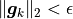
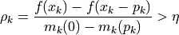
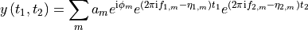
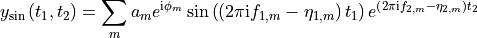
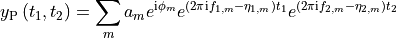
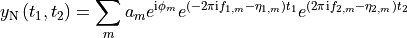

Estimator1D¶
- class nmrespy.Estimator1D(data: numpy.ndarray, expinfo: nmrespy.expinfo.ExpInfo, datapath: pathlib.Path | None = None)[source]¶
Estimator class for 1D data. For a tutorial on the basic functionailty this provides, see Using Estimator1D.
Note
To create an instance of
Estimator1D, you are advised to use one of the following methods if any are appropriate:from_pickle()(re-loads a previously saved estimator).
- Parameters:
data – The data associated with the binary file in path.
datapath – The path to the directory containing the NMR data.
expinfo – Experiment information.
- baseline_correction(min_length: int = 50) None¶
Apply baseline correction to the estimator’s data.
The algorithm applied is desribed in [1]. This uses an implementation provided by pybaselines.
- Parameters:
min_length – From the pybaseline docs: Any region of consecutive baseline points less than
min_lengthis considered to be a false positive and all points in the region are converted to peak points. A highermin_lengthensures less points are falsely assigned as baseline points.
References
- property bf: Iterable[float | None] | None¶
Get the basic frequency (MHz).
For each dimension where
sfo()is notNone, this is equivalent toself.sfo[i] - self.offset()[i]
- property bruker_params: dict | None¶
Return a dictionary of Bruker parameters.
If the class instance was generated by
new_bruker(), a dictionary of experiment parameters will be returned. Otherwise,Nonewill be returned.
- property data: numpy.ndarray¶
Return the data associated with the estimator.
- property data_direct: numpy.ndarray¶
Generate a 1D FID of the first signal in the direct dimension.
- property default_pts: Iterable[int]¶
Get default points associated with each dimension.
- edit_result(index: int = -1, add_oscs: numpy.ndarray | None = None, rm_oscs: Iterable[int] | None = None, merge_oscs: Iterable[Iterable[int]] | None = None, split_oscs: Dict[int, Dict | None] | None = None, **estimate_kwargs) None¶
Manipulate an estimation result. After the result has been changed, it is subjected to optimisation.
There are four types of edit that you can make:
Add new oscillators with defined parameters.
Remove oscillators.
Merge multiple oscillators into a single oscillator.
Split an oscillator into many oscillators.
- Parameters:
index – See index.
add_oscs –
The parameters of new oscillators to be added. Should be of shape
(n, 2 * (1 + self.dim)), wherenis the number of new oscillators to add. Even when one oscillator is being added this should be a 2D array, i.e.1D data:
params = np.array([[a, φ, f, η]])
2D data:
params = np.array([[a, φ, f₁, f₂, η₁, η₂]])
rm_oscs – An iterable of ints for the indices of oscillators to remove from the result.
merge_oscs – An iterable of iterables. Each sub-iterable denotes the indices of oscillators to merge together. For example,
[[0, 2], [6, 7]]would mean that oscillators 0 and 2 are merged, and oscillators 6 and 7 are merged. A merge involves removing all the oscillators, and creating a new oscillator with the sum of amplitudes, and the average of phases, freqeuncies and damping factors.split_oscs –
A dictionary with ints as keys, denoting the oscillators to split. The values should themselves be dicts, with the following permitted key/value pairs:
"separation"- An list of length equal toself.dim. Indicates the frequency separation of the split oscillators in Hz. If not specified, this will be the spectral resolution in each dimension."number"- An int indicating how many oscillators to split into. If not specified, this will be2."amp_ratio"A list of floats with length equal to the number of oscillators to be split into (see"number"). Specifies the relative amplitudes of the oscillators. If not specified, the amplitudes will be equal.
As an example for a 1D estimator:
split_oscs = { 2: { "separation": 1., # if 1D, don't need a list }, 5: { "number": 3, "amp_ratio": [1., 2., 1.], }, }
Here, 2 oscillators will be split.
Oscillator 2 will be split into 2 (default) oscillators with equal amplitude (default). These will be separated by 1Hz.
Oscillator 5 will be split into 3 oscillators with relative amplitudes 1:2:1. These will be separated by
self.sw()[0] / self.default_pts()[0]Hz (default).
estimate_kwargs – Keyword arguments to provide to the call to
estimate(). Note that"initial_guess"and"region_unit"are set internally and will be ignored if given.
- estimate(region: Iterable[Tuple[float, float]] | None = None, noise_region: Iterable[Tuple[float, float]] | None = None, region_unit: str = 'hz', initial_guess: numpy.ndarray | int | None = None, mode: str = 'apfd', amp_thold: float | None = None, phase_variance: bool = True, cut_ratio: float | None = 1.1, mpm_trim: Iterable[int] | None = None, nlp_trim: Iterable[int] | None = None, hessian: str = 'gauss-newton', max_iterations: int | None = None, negative_amps: str = 'remove', output_mode: int | None = 10, save_trajectory: bool = False, epsilon: float = 1e-08, eta: float = 0.15, initial_trust_radius: float = 1.0, max_trust_radius: float = 4.0, check_neg_amps_every: int = 10, _log: bool = True, **optimiser_kwargs)¶
Estimate a specified region of the signal.
The basic steps that this method carries out are:
(Optional, but highly advised) Generate a frequency-filtered “sub-FID” corresponding to a specified region of interest.
(Optional) Generate an initial guess using the Minimum Description Length (MDL) [2] and Matrix Pencil Method (MPM) [3] [4] [5] [6]
Apply numerical optimisation to determine a final estimate of the signal parameters. The optimisation routine employed is the Trust Newton Conjugate Gradient (NCG) algorithm ([7] , Algorithm 7.2).
- Parameters:
region – The frequency range of interest. Should be of the form
[left, right]whereleftandrightare the left and right bounds of the region of interest in Hz or ppm (seeregion_unit). IfNone, the full signal will be considered, though for sufficently large and complex signals it is probable that poor and slow performance will be realised.noise_region – If
regionis notNone, this must be of the form[left, right]too. This should specify a frequency range where no noticeable signals reside, i.e. only noise exists.region_unit – One of
"hz"or"ppm"Specifies the units thatregionandnoise_regionhave been given as.initial_guess –
If
None, an initial guess will be generated using the MPM with the MDL being used to estimate the number of oscillators present.If an int, the MPM will be used to compute the initial guess with the value given being the number of oscillators.
If a NumPy array, this array will be used as the initial guess.
hessian –
Specifies how to construct the Hessian matrix.
If
"exact", the exact Hessian will be used.If
"gauss-newton", the Hessian will be approximated as is done with the Gauss-Newton method. See the “Derivation from Newton’s method” section of this article.
mode – A string containing a subset of the characters
"a"(amplitudes),"p"(phases),"f"(frequencies), and"d"(damping factors). Specifies which types of parameters should be considered for optimisation. In most scenarios, you are likely to want the default value,"apfd".amp_thold –
A value that imposes a threshold for deleting oscillators of negligible ampltiude.
If
None, does nothing.If a float, oscillators with amplitudes satisfying
 will be
removed from the parameter array, where
will be
removed from the parameter array, where  is the Euclidian norm of the vector of
all the oscillator amplitudes. It is advised to set
is the Euclidian norm of the vector of
all the oscillator amplitudes. It is advised to set amp_tholdat least a couple of orders of magnitude below 1.
phase_variance – Whether or not to include the variance of oscillator phases in the cost function. This should be set to
Truein cases where the signal being considered is derived from well-phased data.mpm_trim – Specifies the maximal size allowed for the filtered signal when undergoing the Matrix Pencil. If
None, no trimming is applied to the signal. If an int, and the filtered signal has a size greater thanmpm_trim, this signal will be set assignal[:mpm_trim].nlp_trim – Specifies the maximal size allowed for the filtered signal when undergoing nonlinear programming. By default (
None), no trimming is applied to the signal. If an int, and the filtered signal has a size greater thannlp_trim, this signal will be set assignal[:nlp_trim].max_iterations – A value specifiying the number of iterations the routine may run through before it is terminated. If
None, a default number of maximum iterations is set, based on the the data dimension and the value ofhessian.negative_amps –
Indicates how to treat oscillators which have gained negative amplitudes during the optimisation.
"remove"will result in such oscillators being purged from the parameter estimate. The optimisation routine will the be re-run recursively until no oscillators have a negative amplitude."flip_phase"will retain oscillators with negative amplitudes, but the the amplitudes will be multiplied by -1, and a π radians phase shift will be applied."ignore"will do nothing (negative amplitude oscillators will remain).
output_mode –
Dictates what information is sent to stdout.
If
None, nothing will be sent.If
0, only a message on the outcome of the optimisation will be sent.If a positive int
k, information on the cost function, gradient norm, and trust region radius is sent every kth iteration.
save_trajectory –
If
True, a list of parameters at each iteration will be saved, and accessible via thetrajectoryattribute.Warning
Not implemented yet!
epsilon – Sets the convergence criterion. Convergence will occur when .
eta –
Criterion for accepting an update. An update will be accepted if the ratio of the actual reduction and the predicted reduction is greater than
eta:
initial_trust_radius – The initial value of the radius of the trust region.
max_trust_radius – The largest permitted radius for the trust region.
check_neg_amps_every – For every iteration that is a multiple of this, negative amplitudes will be checked for and dealt with if found.
_log – Ignore this!
References
- exp_apodisation(k: Iterable[float])¶
Apply an exponential window function to the direct dimnsion of the data.
- Parameters:
k – Line-broadening factor for each dimension.
- property expinfo_direct: nmrespy.expinfo.ExpInfo¶
Generate a 1D
ExpInfo()object with parameters related to the direct dimension.
- property fn_mode: str | None¶
Get acquisiton mode in indirect dimensions. If
self.dim == 1, returnsNone.
- classmethod from_pickle(path: str | pathlib.Path) nmrespy.estimators.Estimator¶
Load a pickled estimator instance.
Warning
From the Python docs:
“The pickle module is not secure. Only unpickle data you trust. It is possible to construct malicious pickle data which will execute arbitrary code during unpickling. Never unpickle data that could have come from an untrusted source, or that could have been tampered with.”
You should only use
from_pickleon files that you are 100% certain were generated usingto_pickle(). If you load pickled data from a .pkl file, and the resulting output is not an estimator object, an error will be raised.- Parameters:
path – The path to the pickle file. Do not include the
.pklsuffix.
- get_errors(indices: Iterable[int] | None = None, merge: bool = True, funit: str = 'hz', sort_by: str = 'f-1') Iterable[numpy.ndarray] | numpy.ndarray | None¶
Return estimation result errors.
- Parameters:
indices – see indices
merge –
If
True, a single array of all parameters will be returned.If
False, an iterable of each individual estimation result’s parameters will be returned.
funit – The unit to express frequencies in. Must be one of
"hz"and"ppm".sort_by –
Specifies the parameter by which the oscillators are ordered by.
Note the errors are re-ordered such that they would agree with the parameters from
get_params()when given the samesort_byargument.Should be one of
"a"for amplitude"p"for phase"f<n>"for frequency in the<n>-th dimension"d<n>"for the damping factor in the<n>-th dimension.
By setting
<n>to-1, the final (direct) dimension will be used. For 1D data,"f"and"d"can be used to specify the frequency or damping factor.
- get_log() str¶
Get the log for the estimator instance.
- get_params(indices: Iterable[int] | None = None, merge: bool = True, funit: str = 'hz', sort_by: str = 'f-1') Iterable[numpy.ndarray] | numpy.ndarray | None¶
Return estimation result parameters.
- Parameters:
indices – see indices
merge –
If
True, a single array of all parameters will be returned.If
False, an iterable of each individual estimation result’s parameters will be returned.
funit – The unit to express frequencies in. Must be one of
"hz"and"ppm".sort_by –
Specifies the parameter by which the oscillators are ordered by.
Should be one of
"a"for amplitude"p"for phase"f<n>"for frequency in the<n>-th dimension"d<n>"for the damping factor in the<n>-th dimension.
By setting
<n>to-1, the final (direct) dimension will be used. For 1D data,"f"and"d"can be used to specify the frequency or damping factor.
- get_results(indices: Iterable[int] | None = None) Iterable[nmrespy.estimators.Result]¶
Obtain a subset of the estimation results obtained.
By default, all results are returned, in the order in which they are obtained.
- Parameters:
indices – see indices
- get_shifts(pts: Iterable[int] | None = None, unit: str = 'hz', flip: bool = True, meshgrid: bool = True) Iterable[numpy.ndarray]¶
Construct chemical shifts which reflect the experiment parameters.
- Parameters:
pts – The number of points to construct the shifts with in each dimesnion. If
None, andself.default_ptsis a tuple of ints, it will be used.unit – Must be one of
"hz"or"ppm".flip – If
True, the shifts will be returned in descending order, as is conventional in NMR. IfFalse, the shifts will be in ascending order.meshgrid – If time-points are being derived for a N-dimensional signal (N > 1), setting this argument to
Truewill return N-dimensional arrays corresponding to all combinations of points in each dimension. IfFalse, an iterable of 1D arrays will be returned.
- get_timepoints(pts: Iterable[int] | None = None, start_time: Iterable[float | str] | None = None, meshgrid: bool = True) Iterable[numpy.ndarray]¶
Construct time-points which reflect the experiment parameters.
- Parameters:
pts – The number of points to construct the time-points with in each dimesnion. If
None, andself.default_ptsis a tuple of ints, it will be used.start_time –
The start time in each dimension. If set to
None, the initial point in each dimension will be0.0. To set non-zero start times, a list of floats or strings can be used.If floats are used, they specify the first value in each dimension in seconds.
Strings of the form
f'{N}dt', whereNis an integer, may be used, which indicates a cetain multiple of the dwell time.
meshgrid – If time-points are being derived for a N-dimensional signal (N > 1), setting this argument to
Truewill return N-dimensional arrays corresponding to all combinations of points in each dimension. IfFalse, an iterable of 1D arrays will be returned.
- property latex_nuclei: Iterable[str | None] | None¶
Get the nuclei associated with each channel with for use in LaTeX.
Examples:
"1H"→"\\textsuperscript{1}H""195Pt"→"\\textsuperscript{195}Pt"
- make_fid(params: numpy.ndarray, pts: Iterable[int] | None = None, snr: float | None = None, decibels: bool = True, indirect_modulation: str | None = None) numpy.ndarray¶
Construct an FID from an array of oscillator parameters.
- Parameters:
params –
Parameter array with the following structure:
1-dimensional data:
params = numpy.array([ [a_1, φ_1, f_1, η_1], [a_2, φ_2, f_2, η_2], ..., [a_m, φ_m, f_m, η_m], ])
2-dimensional data:
params = numpy.array([ [a_1, φ_1, f1_1, f2_1, η1_1, η2_1], [a_2, φ_2, f1_2, f2_2, η1_2, η2_2], ..., [a_m, φ_m, f1_m, f2_m, η1_m, η2_m], ])
pts – The number of points to construct the time-points with in each dimesnion. If
None, andself.default_ptsis a tuple of ints, it will be used.snr – The signal-to-noise ratio. If None then no noise will be added to the FID.
decibels – If
True, the snr is taken to be in units of decibels. If False, it is taken to be simply the ratio of the singal power over the noise power.indirect_modulation –
Acquisition mode in the indirect dimension if the data is 2D. If the data is 1D, this argument is ignored.
None- hypercomplex dataset:
"amp"- amplitude modulated pair:
"phase"- phase-modulated pair:

Nonewill lead to an array of shape(n1, n2).ampandphasewill lead to an array of shape(2, n1, n2), withfid[0]andfid[1]being the two components of the pair.
See also
For converting amplitude-modulated data to spectral data, see
nmrespy.sig.proc_amp_modulated()For converting phase-modulated data to spectral data, see
nmrespy.sig.proc_phase_modulated()
- manual_phase_data(max_p1: float = 31.41592653589793) Tuple[float, float]¶
Manually phase the data using a Graphical User Interface.
- Parameters:
max_p1 – The largest permitted first order correction (rad). Set this to a larger value than the default (10π) if you anticipate having to apply a very large first order correction.
- Returns:
p0 – Zero order phase (rad)
p1 – First prder phase (rad)
See also
- classmethod new_bruker(directory: str | pathlib.Path, convdta: bool = True) nmrespy.estimators.onedim.Estimator1D[source]¶
Create a new instance from Bruker-formatted data.
- Parameters:
directory – Absolute path to data directory.
convdta – If
Trueand the data is derived from anfidfile, removal of the FID’s digital filter will be carried out.
Notes
There are certain file paths expected to be found relative to
directorywhich contain the data and parameter files. Here is an extensive list of the paths expected to exist, for different data types:Raw FID
directory/fiddirectory/acqus
Processed data
directory/1rdirectory/../../acqusdirectory/procs
- classmethod new_from_parameters(params: numpy.ndarray, pts: int, sw: float, offset: float, sfo: float = 500.0, nucleus: str = '1H', snr: float | None = 20.0) nmrespy.estimators.onedim.Estimator1D[source]¶
Generate an estimator instance with sythetic data created from an array of oscillator parameters.
- Parameters:
params –
Parameter array with the following structure:
params = numpy.array([ [a_1, φ_1, f_1, η_1], [a_2, φ_2, f_2, η_2], ..., [a_m, φ_m, f_m, η_m], ])
pts – The number of points the signal comprises.
sw – The sweep width of the signal (Hz).
offset – The transmitter offset (Hz).
sfo – The transmitter frequency (MHz).
nucleus – The identity of the nucleus. Should be of the form
"<mass><sym>"where<mass>is the atomic mass and<sym>is the element symbol. Examples:"1H","13C","195Pt"snr – The signal-to-noise ratio (dB). If
Nonethen no noise will be added to the FID.
- classmethod new_spinach(shifts: Iterable[float], couplings: Optional[Iterable[Tuple(int, int, float)]], pts: int, sw: float, offset: float = 0.0, field: float = 11.74, nucleus: str = '1H', snr: float | None = 20.0, lb: float = 6.91) Estimator1D[source]¶
Create a new instance from a pulse-acquire Spinach simulation.
See MATLAB and Spinach (Optional) for requirments to use this method.
- Parameters:
shifts – A list of tuple of chemical shift values for each spin.
couplings – The scalar couplings present in the spin system. Given
shiftsis of lengthn, couplings should be an iterable with entries of the form(i1, i2, coupling), where1 <= i1, i2 <= nare the indices of the two spins involved in the coupling, andcouplingis the value of the scalar coupling in Hz.Nonewill set all spins to be uncoupled.pts – The number of points the signal comprises.
sw – The sweep width of the signal (Hz).
offset – The transmitter offset (Hz).
sfo – The magnetic field strength (T).
nucleus –
The identity of the nucleus. Should be of the form
"<mass><sym>"where<mass>is the atomic mass and<sym>is the element symbol. Examples:"1H""13C""195Pt"
snr – The signal-to-noise ratio of the resulting signal, in decibels.
Noneproduces a noiseless signal.lb – Line broadening (exponential damping) to apply to the signal. The first point will be unaffected by damping, and the final point will be multiplied by
np.exp(-lb). The default results in the final point being decreased in value by a factor of roughly 1000.
- property nuclei: Iterable[str | None] | None¶
Get the nuclei associated with each channel.
- offset(unit: str = 'hz') Iterable[float]¶
Get the transmitter offset frequency.
- Parameters:
unit – Must be
"hz"or"ppm".
- phase_data(p0: float = 0.0, p1: float = 0.0, pivot: int = 0) None¶
Apply a first-order phase correction in the direct dimension.
- Parameters:
p0 – Zero-order phase correction, in radians.
p1 – First-order phase correction, in radians.
pivot – Index of the pivot.
0corresponds to the leftmost point in the spectrum.
See also
- plot_result(indices: Iterable[int] | None = None, high_resolution_pts: int | None = None, axes_left: float = 0.07, axes_right: float = 0.96, axes_bottom: float = 0.08, axes_top: float = 0.96, axes_region_separation: float = 0.05, xaxis_unit: str = 'hz', xaxis_label_height: float = 0.02, xaxis_ticks: Iterable[Tuple[int, Iterable[float]]] | None = None, oscillator_colors: Any = None, plot_model: bool = True, plot_residual: bool = True, model_shift: float | None = None, residual_shift: float | None = None, label_peaks: bool = True, denote_regions: bool = False, spectrum_line_kwargs: Dict | None = None, oscillator_line_kwargs: Dict | None = None, residual_line_kwargs: Dict | None = None, model_line_kwargs: Dict | None = None, label_kwargs: Dict | None = None, **kwargs) Tuple[matplotlib.figure.Figure, numpy.ndarray[matplotlib.axes._axes.Axes]][source]¶
Generate a figure of the estimation result.
- Parameters:
indices – See indices.
high_resolution_pts – Indicates the number of points used to generate the oscillators and model. Should be greater than or equal to
self.default_pts[0]. IfNone,self.default_pts[0]will be used.axes_left – The position of the left edge of the axes, in figure coordinates. Should be between
0.and1..axes_right – The position of the right edge of the axes, in figure coordinates. Should be between
0.and1..axes_top – The position of the top edge of the axes, in figure coordinates. Should be between
0.and1..axes_bottom – The position of the bottom edge of the axes, in figure coordinates. Should be between
0.and1..axes_region_separation – The extent by which adjacent regions are separated in the figure, in figure coordinates.
xaxis_unit – The unit to express chemical shifts in. Should be
"hz"or"ppm".xaxis_label_height – The vertical location of the x-axis label, in figure coordinates. Should be between
0.and1., though you are likely to want this to be only slightly larger than0..xaxis_ticks – Specifies custom x-axis ticks for each region, overwriting the default ticks. Should be of the form:
[(i, (a, b, ...)), (j, (c, d, ...)), ...]whereiandjare ints indicating the region under consideration, anda-dare floats indicating the tick values.oscillator_colors – Describes how to color individual oscillators. See color cycle for details.
plot_model –
Todo
Add description
plot_residual –
Todo
Add description
model_shift – The vertical displacement of the model relative to the data.
residual_shift – The vertical displacement of the residaul relative to the data.
label_peaks – If True, label peaks according to their index. The parameters of a peak denoted with the label
iin the figure can be accessed withself.get_results(indices)[i].denote_regions – If
True, and there are regions which share a boundary, a vertical line will be plotted to show the boundary.spectrum_line_kwargs – Keyword arguments for the spectrum line. All keys should be valid arguments for matplotlib.axes.Axes.plot.
oscillator_line_kwargs –
Keyword arguments for the oscillator lines. All keys should be valid arguments for matplotlib.axes.Axes.plot. If
"color"is included, it is ignored (colors are processed based on theoscillator_colorsargument.residual_line_kwargs –
Keyword arguments for the residual line (if included). All keys should be valid arguments for matplotlib.axes.Axes.plot.
model_line_kwargs –
Keyword arguments for the model line (if included). All keys should be valid arguments for matplotlib.axes.Axes.plot.
label_kwargs – Keyword arguments for oscillator labels. All keys should be valid arguments for matplotlib.text.Text If
"color"is included, it is ignored (colors are procecessed based on theoscillator_colorsargument."horizontalalignment","ha","verticalalignment", and"va"are also ignored, as these are determined internally.kwargs – Keyword arguments provided to matplotlib.pyplot.figure.
- Returns:
fig – The result figure. This can be saved to various formats using the savefig method.
axs – A
(1, N)NumPy array of the axes generated.
- save_log(path: str | pathlib.Path = './espy_logfile', force_overwrite: bool = False, fprint: bool = True) None¶
Save the estimator’s log.
- Parameters:
path – The path to save the log to.
force_overwrite – If
pathalready exists andforce_overwriteis set toFalse, the user will be asked to confirm whether they are happy to overwrite the file. IfTrue, the file will be overwritten without prompt.fprint – Specifies whether or not to print infomation to the terminal.
- property sfo: Iterable[float | None] | None¶
Get the transmitter frequency (MHz).
- property spectrum: numpy.ndarray¶
Return the spectrum associated with the estimator.
- property spectrum_direct: numpy.ndarray¶
Generate a 1D spectrum of the first signal in the direct dimension.
- subband_estimate(noise_region: Tuple[float, float], noise_region_unit: str = 'hz', nsubbands: int | None = None, **estimate_kwargs) None¶
Perform estiamtion on the entire signal via estimation of frequency-filtered sub-bands.
This method splits the signal up into
nsubbandsequally-sized region and extracts parameters from each region before finally concatenating all the results together.Warning
This method is a work-in-progress. It is unlikely to produce decent results at the moment! I aim to improve the way that regions are created in the future.
- Parameters:
noise_region – Specifies a frequency range where no noticeable signals reside, i.e. only noise exists.
noise_region_unit – One of
"hz"or"ppm". Specifies the units thatnoise_regionhave been given in.nsubbands – The number of sub-bands to break the signal into. If
None, the number will be set as the nearest integer to the data size divided by 500.estimate_kwargs – Keyword arguments to give to
estimate(). Note thatregionandinitial_guesswill be ignored.
- sw(unit: str = 'hz') Iterable[float]¶
Get the sweep width.
- Parameters:
unit – Must be
"hz"or"ppm".
- to_pickle(path: str | pathlib.Path | None = None, force_overwrite: bool = False, fprint: bool = True) None¶
Save the estimator to a byte stream using Python’s pickling protocol.
- Parameters:
path – Path of file to save the byte stream to. Do not include the
'".pkl"suffix. IfNone,./estimator_<x>.pklwill be used, where<x>is the first number that doesn’t cause a clash with an already existent file.force_overwrite –
Defines behaviour if the specified path already exists:
If
False, the user will be prompted if they are happy overwriting the current file.If
True, the current file will be overwritten without prompt.
fprint – Specifies whether or not to print infomation to the terminal.
See also
- property unicode_nuclei: Iterable[str | None] | None¶
Get the nuclei associated with each channel with superscript numbers.
Examples:
"1H"→"¹H","15N"→"¹⁵N".
- view_data(domain: str = 'freq', components: str = 'real', freq_unit: str = 'hz') None[source]¶
View the data (FID or spectrum) with an interactive matplotlib plot.
- Parameters:
domain – Must be
"freq"or"time".components – Must be
"real","imag", or"both".freq_unit – Must be
"hz"or"ppm". Ifdomainisfreq, this determines which unit to set chemical shifts to.
- write_result(path: pathlib.Path | str = './nmrespy_result', indices: Iterable[int] | None = None, fmt: str = 'txt', description: str | None = None, sig_figs: int | None = 5, sci_lims: Tuple[int, int] | None = (-2, 3), integral_mode: str = 'relative', force_overwrite: bool = False, fprint: bool = True, pdflatex_exe: str | pathlib.Path | None = None) None¶
Write estimation result tables to a text/PDF file.
- Parameters:
path – Path to save the result file to.
indices – see indices
fmt – Must be one of
"txt"or"pdf". If you wish to generate a PDF, you must have a LaTeX installation. See LaTeX (Optional).description – Descriptive text to add to the top of the file.
sig_figs – The number of significant figures to give to parameters. If
None, the full value will be used. By default this is set to5.sci_lims – Given a value
(-x, y)with intsxandy, any parameterpwith a value which satisfiesp < 10 ** -xorp >= 10 ** ywill be expressed in scientific notation. IfNone, scientific notation will never be used.integral_mode –
One of
"relative"or"absolute".If
"relative", the smallest integral will be set to1, and all other integrals will be scaled accordingly.If
"absolute", the absolute integral will be computed. This should be used if you wish to directly compare different datasets.
force_overwrite –
Defines behaviour if the specified path already exists:
If
False, the user will be prompted if they are happy overwriting the current file.If
True, the current file will be overwritten without prompt.
fprint – Specifies whether or not to print information to the terminal.
pdflatex_exe –
The path to the system’s
pdflatexexecutable.Note
You are unlikely to need to set this manually. It is primarily present to specify the path to
pdflatex.exeon Windows when the NMR-EsPy GUI has been loaded from TopSpin.
- write_to_bruker(path: str | pathlib.Path, indices: Iterable[int] | None = None, pts: Iterable[int] | None = None, expno: int | None = None, procno: int | None = None, force_overwrite: bool = False) None[source]¶
Write a signal generated with estimated parameters to Bruker format.
<path>/<expno>/will contain the time-domain data and information (fid,acqus, …)<path>/<expno>/pdata/1/will contain the processed data and information (pdata,procs, …)
Note
There is a known problem that the spectral data has timepoints along the x-axis rather than chemical shifts. I will try to figure out why and fix this in due course!
- Parameters:
path – The path to the root directory to store the data in.
indices – See indices.
pts – The number of points to construct the signal from.
expno – The experiment number. If
None, the smallest intxfor which the directory<path>/<x>/doesn’t exist will be used.force_overwrite – If
Falseand the directory<path>/<expno>/already exists, the user will be prompted to confirm whether they are happy to overwrite it. IfTrue, said directory will be overwritten.